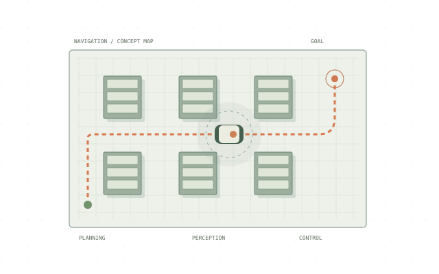

Robotics & autonomous systems / Independent project
Autonomous warehouse robot
An ongoing warehouse-robot concept connecting mechanical design with navigation in simulation.

Concept illustration · not original project imagery
Project overview
Explore mobile material transport between warehouse locations.
Approach
- Mechanical modelling in Fusion 360.
- ROS 2 and Gazebo simulation workflow.
- Navigation concepts using Nav2, path planning and obstacle avoidance.
Engineering focus
Mobile robotics, mechanical integration and autonomous material handling.